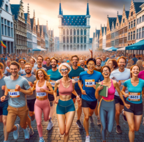

 The EAERE 5K run is organized irregularly since the inaugural run in Manchester, 2019.
The next run is during EAERE 2024 in Leuven. .
The run will take place on Wednesday, July 3rd, @7.00 (in the morning!) and is co-organized by Johan Eyckmans.
Please sign up for the run using this form.
The start will be close to the city center. You will be sent details of the exact location/route nearer the time.
Everyone who is in town for the EAERE meeting – researchers, faculty, students, staff, partners, is welcome to participate. This is one of the best opportunities to get to know your fellow environmental economists (at least, the subset that is willing to wake up early and run at 7AM). To enhance the social element of the run, we will run in several groups, each running at different speeds.
If you have any questions please contact me by email.